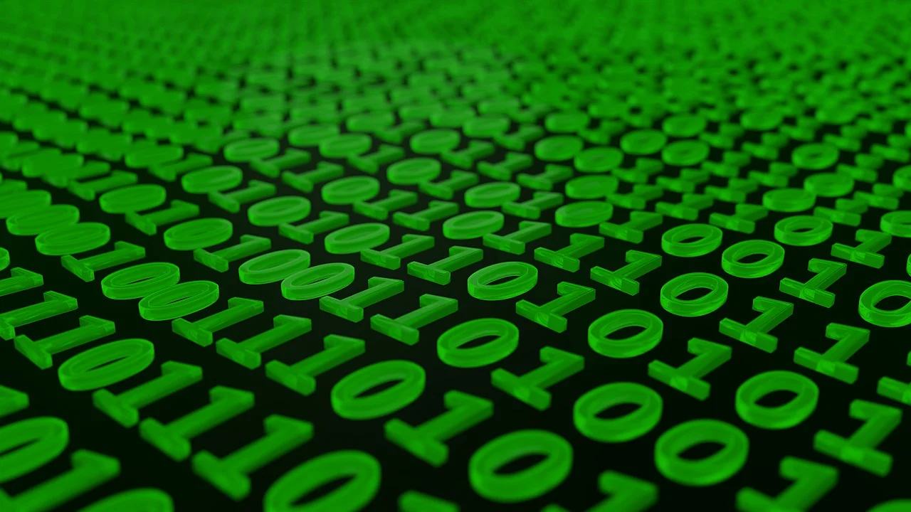

Sistemas Numéricos y Códigos
Conversión de Binario a Decimal
Los números binarios están compuestos por 0 y 1, y se convierten a decimal utilizando la base 2. Para ello, se multiplica cada dígito por 2 elevado a la posición que ocupa y se suman los resultados.
Ejemplo: Convertir el binario 1011 a decimal
1 × 2³ + 0 × 2² + 1 × 2¹ + 1 × 2⁰
= 8 + 0 + 2 + 1
= 11
Conversión de Decimal a Binario
Para convertir un número decimal a binario, se divide sucesivamente entre 2, anotando los residuos hasta obtener un cociente de 0.
Ejemplo: Convertir el decimal 13 a binario
13 / 2 → Cociente: 6 Residuo: 1
6 / 2 → Cociente: 3 Residuo: 0
3 / 2 → Cociente: 1 Residuo: 1
1 / 2 → Cociente: 0 Residuo: 1
Resultado: 1101
